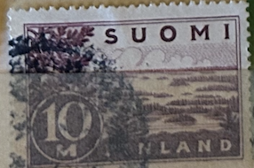
| SOURCE | TITLE| IMAGE MATCH | click to source page |
| www.ebay.com | Finland #Mi0156lla MH 1932 Saimaa Grey Lilac Reengraving ... | 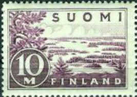 |
| www.ebay.com | FINLAND. #188. 1930. Lake Saima, 10 mk gray lilac, VF MNH ... | 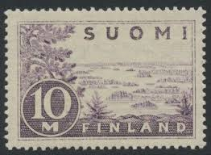 |
| ittybittystampcompany.com | Finland Scott #178 Mint Hinged – The Itty Bitty Stamp Company | 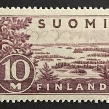 |
| www.ebay.com | Finland SC #178 Used 1930 | eBay | 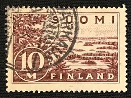 |
| www.hipstamp.com | FINLAND; 1932 early Pictorial issue fine used 10M. value ... | 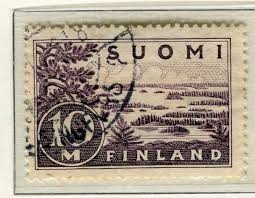 |
| www.alamy.com | POLTAVA, UKRAINE - October 30, 2020. Vintage stamp printed ... | 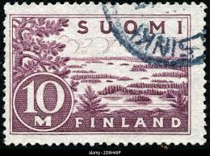 |
| stampden.com | Browse Listings in Europe > Finland - Page 4 of 7 - 10 items ... | 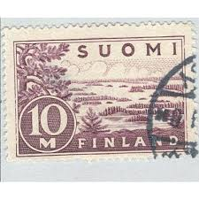 |
| stampforgeries.com | Stamp forgeries of Finland 20th Century | Stampforgeries of ... | 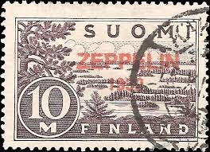 |
| www.ebay.com | Saimaa Lake M30 10mk Michel 156 Definitive Finland Mint MNH ... | 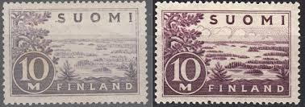 |
| www.jaysmith.com | Jay Smith & Associates: Finland: Gallery: Select Stamps ... | 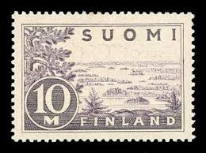 |
| za.pinterest.com | 40 Ita Karjala Stamps ideas to save today | postal stamps ... | 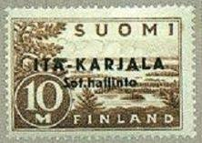 |
| album.dk | Finland Østkarelen 14 Ubrugt - Samleren | 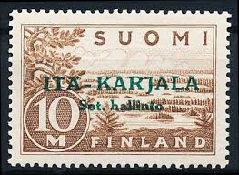 |
| starozitnosti.bazar.sk | Fínsko - 1930 - Vojka nad Dunajom | Bazar.sk | 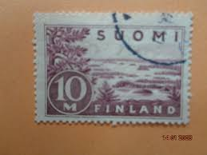 |
| stamps.fi | 1930 M-30 10mk Lake Saimaa II ** L.156II | Philatelic ... | 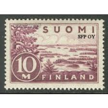 |
| www.shutterstock.com | 89,976 Finland 1918 To 1920 State Royalty-Free Images, Stock ... | 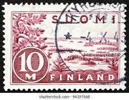 |
| www.huuto.net | 500 - Failed to fetch dynamically imported module: https ... | 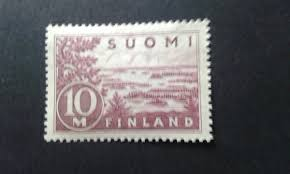 |
| www.hyfila.fi | Yleismerkit | Hyvinkään Postimerkkikerho | 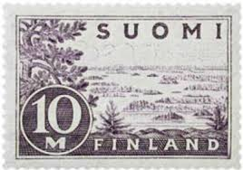 |
| www.osta.ee | 1932 Soome/Finland 10 Markkaa Michel 156.1 Scott205aCat.0.5 ... | 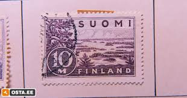 |
| www.ebay.com | Finland, Scott 178, Lake Saina, 1930, used | eBay | 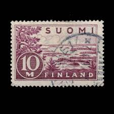 |
| www.tori.fi | 1940-luvun merkkejä | Tori | 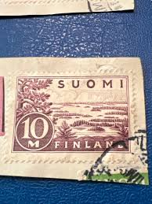 |
| fb-net.dk | 10 Mk matviolet 1930 Finland 162 Frimærke Ustemplet * | 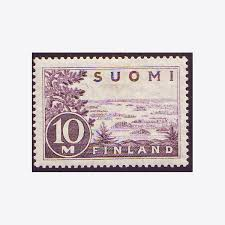 |
| www.flickr.com | stamp Finland Suomi 0.05 M Finnland postzegel Briefmarke t ... | 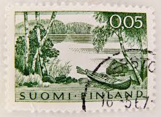 |
| www.ebid.net | Finland 1930 10m Lake Saimaa fine used stamp SG276b on ... | 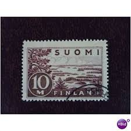 |
| www.systeemi.net | hammastesiirtymiä (Kohde: 13952458, Päättyy: 11/02/2026 09 ... | 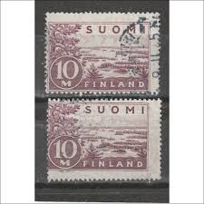 |
| www.alamy.com | FINLAND - CIRCA 1930: stamp printed in Finland, shows Coat ... | 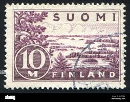 |
| www.tradera.com | Se produkter som liknar Finland Itä-Karjala 10 MK. LY.. på ... | 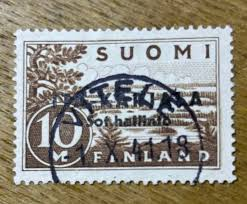 |
| hbs.997788.com | 德国邮票.1936年{汉莎航空公司10周年】40pf、信销票-欧洲邮票 ... | 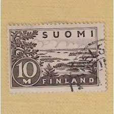 |
| www.hyfila.fi | M30; v. 1930, La. 156, Lo 10 mk Saimaa | Hyvinkään ... | 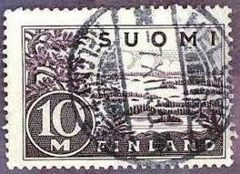 |
| www.reddit.com | Vintage Finnish Postage Stamps : r/Finland | 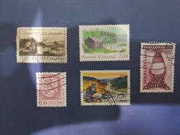 |
| www.jaysmith.com | Jay Smith & Associates: Finland: New Arrivals: Stamps | 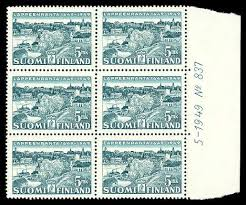 |
| commons.wikimedia.org | File:Stamp of Finland - 1949 - Colnect 46112 - 75th ... | 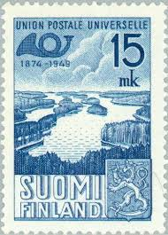 |
| community.postcrossing.com | Are there still beautiful engraved stamps in your country ... | 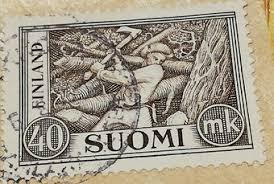 |
| katzauction.com | Finland 1 Markka 1963 PMG 66 EPQ Gem Uncirculated | Katz Auction | 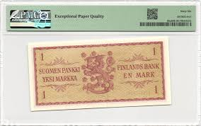 |
| www.dreamstime.com | 268 Saima Stock Photos - Free & Royalty-Free Stock Photos ... | 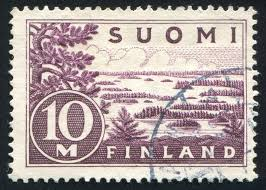 |
| www.collectorscouch.com | Finland 20 Markka P-123 Pre-Euro Banknote World Paper Money ... | 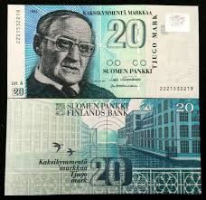 |
| www.threads.com | Country. : Finland🇫🇮 Currency : New markka Denomination ... | 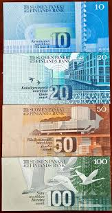 |
| www.ebay.com | Saimaa Lake M30 10mk Grey Violet Definitive Finland Mint MNH ... | 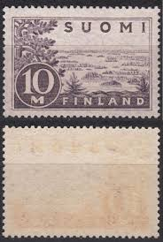 |
| www.reddit.com | Finnish markka 1955 model banknotes : r/Banknotes | 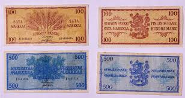 |
| www.hipstamp.com | FINLAND; 1932 early Pictorial issue fine used 10M. value ... | 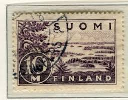 |
| www.cgbfr.com | 20 Markkaa FINLAND 1945 P.078a 544500 Banknotes | 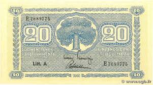 |
| en.numista.com | 10 Markkaa - Finland – Numista | 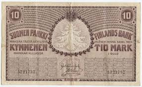 |
| ittybittystampcompany.com | Finland Scott # 177-178 Used – The Itty Bitty Stamp Company | 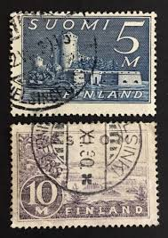 |
| www.leftovercurrency.com | 5 Finnish Markkaa banknote (1963) - Exchange yours for cash ... | 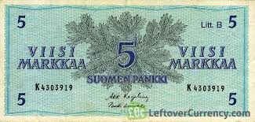 |
| www.instagram.com | Finland 10 Markkaa 1939 Eliel Saarinen designed the Neo ... | 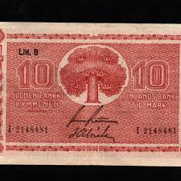 |
| www.etsy.com | Finland 20, 5, 1 Markkaa 1960s-1990s Pre-euro Lot of 3 ... | 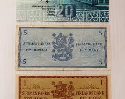 |
| www.greysheet.com | Suomen Pankki 50 markkaa / mark B364a,P45 1922 15 sig ... | 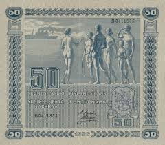 |
| coinsntreasures.com | FINLAND 1 AND 5 (Z PREFIX) MARKKA 1963 UNC BANKNOTES p98 p99 | 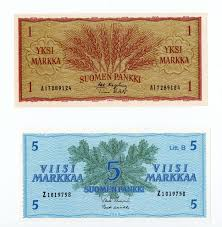 |
| northwindstamps.com | Finland: Stamps from 1901 to 1949 – Northwind Stamps | 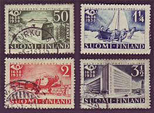 |
| faha-ashtabula.org | Home - Finnish American Heritage Association | 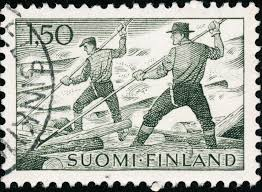 |
| www.banknoteworld.com | Finland 10 Markkaa Banknote, 1963, P-104a.23, UNC | |
| www.jaysmith.com | Jay Smith & Associates: Finland: Specialized Stamps: 1930 ... | |
| urbanmilwaukee.com | MSO: Lecce-Chong leads an eclectic program » Urban Milwaukee | |
| en.numista.com | 5 Markkaa, Litt. D - Finland – Numista | |
| thecollectorsshopblackrock.wordpress.com | Stamps of the World – Finnish Occupation of Karelia: 1939-44 ... | |
| stock.adobe.com | "Finnish Currency" Images – Browse 49 Stock Photos, Vectors ... | |
| en.wikipedia.org | Postage stamps and postal history of Karelia - Wikipedia | |
| www.alamy.com | Finnish landscape on postage stamp Stock Photo - Alamy | |
| commons.wikimedia.org | File:Stamp of Finland - 1969 - Colnect 823266 - Arial View ... | |
| northwindstamps.com | Finland : Stamps from 1950 to 1999 – Northwind Stamps |
{kind=link}
{kind=link}